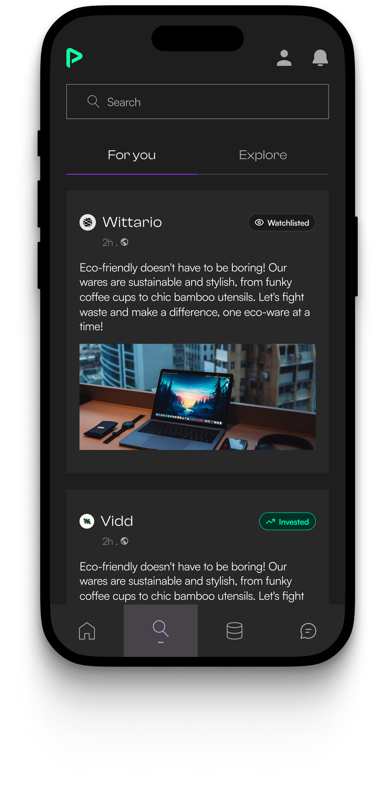
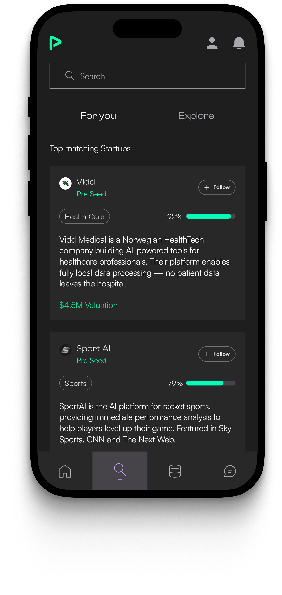
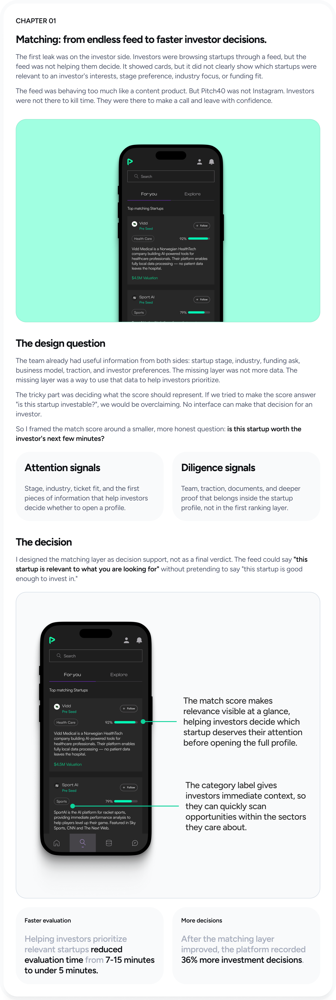
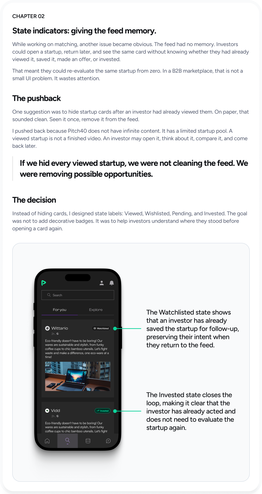

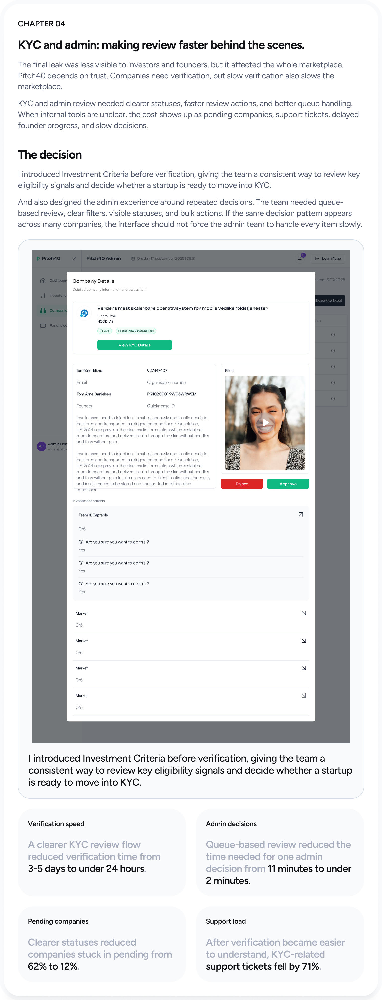

Bringing startups and investors together, without making the people behind it harder to manage.


Pitch40 connects startups raising capital with investors looking for opportunities. Startups create profiles, upload their pitch, complete verification, and try to get discovered. Investors browse startups, shortlist the ones that fit, and move toward conversations or investment decisions. Behind that, an internal team reviews companies, verifies KYC, and keeps the marketplace moving.
Pitch40 connects startups raising capital with investors looking for opportunities. Startups create profiles, upload their pitch, complete verification, and try to get discovered. Investors browse startups, shortlist the ones that fit, and move toward conversations or investment decisions. Behind that, an internal team reviews companies, verifies KYC, and keeps the marketplace moving.
Investors reduced evaluation time from 7-15 minutes to under 5 minutes.
The platform recorded a 36% increase in investment decisions.
Matched deal volume grew from $4.7M to $8.9M.
Startup onboarding completion increased from 41% to 76%.
The CTO did not ask for a redesign. He asked where the product was leaking.
That question made the work different from the start. I was not handed one neat feature brief. I had to understand where people were slowing down, dropping off, repeating work, or waiting for the team to move something manually.
I was still early in my design career at that time, so even understanding the data felt like part of the project. What does average time actually mean here? Where is the drop-off happening? What can the dev team track? Which number matters, and which one is just noise?
The CTO helped me understand what data we could get. The developers helped me understand what was technically possible. Slowly, the problem became less abstract: Pitch40 was not missing more screens. It was missing clearer decision moments.
It was not one big broken screen. It was a chain of small leaks.
Once we looked across the journey, the work stopped feeling like separate features. Each problem was connected to the next one.
They were not here to scroll. They needed to understand which startups deserved their next few minutes.
They wanted to reach the marketplace, but onboarding asked for too much before they saw value.
They wanted to reach the marketplace, but onboarding asked for too much before they saw value.
Verification and review needed clearer status, queues, and bulk control to keep the marketplace moving.
The product did not need one dramatic redesign. It needed four connected fixes at the points where decisions slowed down.




Each fix solved a different leak, but the product goal was the same.
Investors slowed down when the feed lacked relevance. They repeated work when the feed had no memory. Founders dropped when onboarding asked too much too early. Internal teams slowed down when review and verification required too much manual effort.
Investors could evaluate a startup in under 5 minutes instead of spending 7-15 minutes.
Matched deal volume increased from $4.7M to $8.9M.
Founders reached their first match in under 20 minutes instead of waiting more than 2 days.
The admin team increased daily queue clearance from 14 to 52 reviews.
This project changed how I think about B2B design.
Before Pitch40, it was easy to think of design as screens, flows, and UI quality. Those things still matter. But in a B2B product, design also has to find where the business process is slowing down.
Sometimes the problem is not visible on one screen. Sometimes it is between screens. A founder gets blocked before reaching value. An investor opens the same startup twice. An admin spends ten minutes on a decision that should take two.
Good B2B design is not only about making the product easier to use. It is about helping the right people make the right decisions faster, with enough context to trust what they are doing.